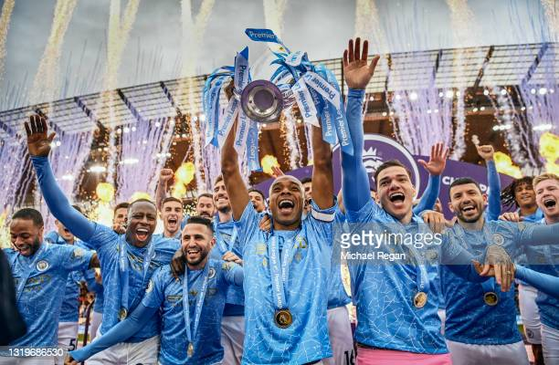

Manchester City Football Club
Manchester City Football Club is an English football club based in Manchester that competes in the Premier League, the top flight of English football. Founded in 1880 as St. Mark's (West Gorton), it became Ardwick Association Football Club in 1887 and Manchester City in 1894. The club's home ground is the Etihad Stadium in east Manchester, to which it moved in 2003, having played at Maine Road since 1923. The club adopted their sky blue home shirts in 1894 in the first season of the club's current iteration, and have used them ever since.

Manchester City Media
Manchester City plays an exiciting, fast paced brand of football. Go to our media page to check out exciting audio and video clips.
 Learn More...Manchester City Gallery
Go to our image gallery to see some exciting pictures of Man City in action.
 Learn More...
Learn More...